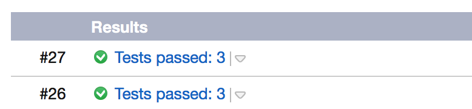
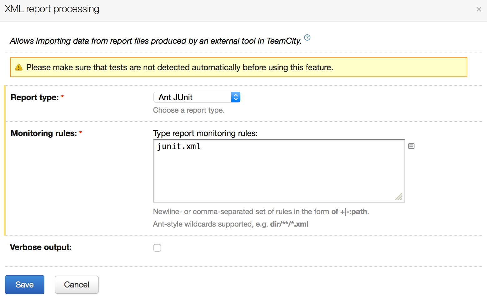
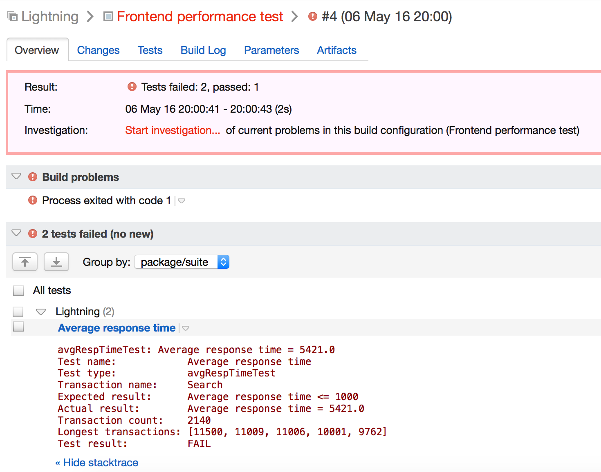
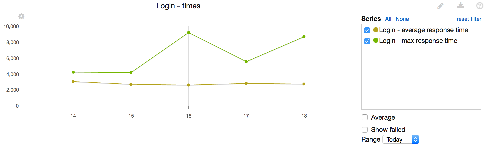

Build status
Exit code produced by Lightning will set build status to passed or failed.
Build status text
TeamCity build status text will be set to include:
- in
verifymode - number of executed/failed tests - in
reportmode - number of executed/failed transactions
instead of default message (Success or other)

Test report
JUnit XML report produced by Lightning provides insight into particular failures.
Required build configuration:

Test results:

Build statistics
For each of the tests, Lightning generates console output which lets you configure build statistics:
